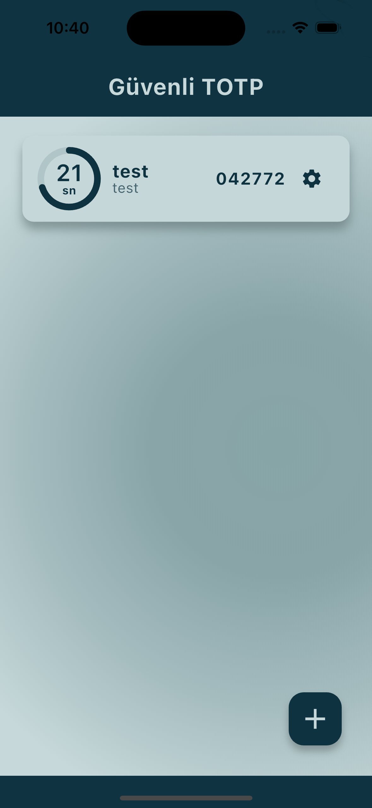
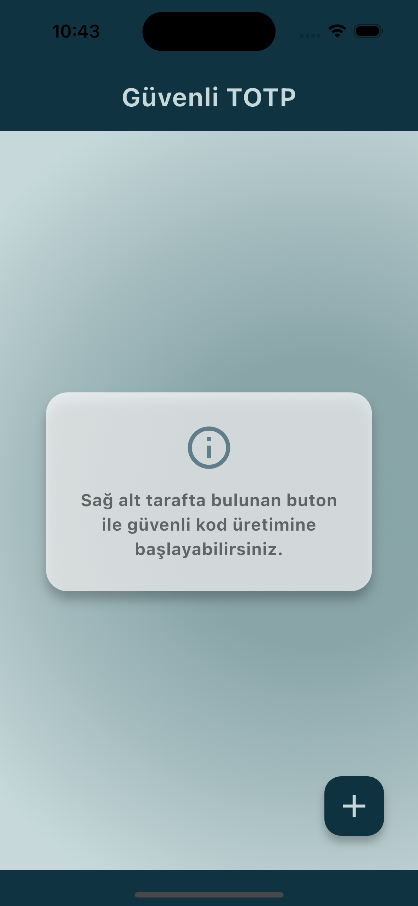
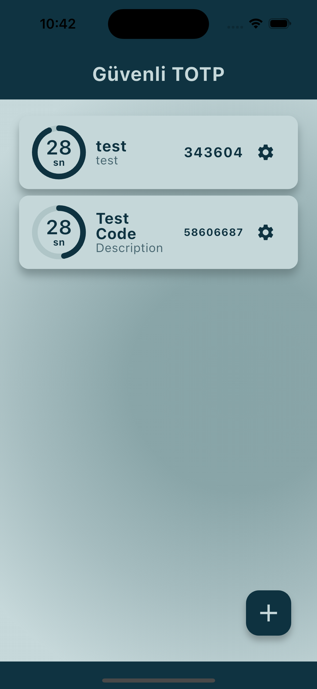
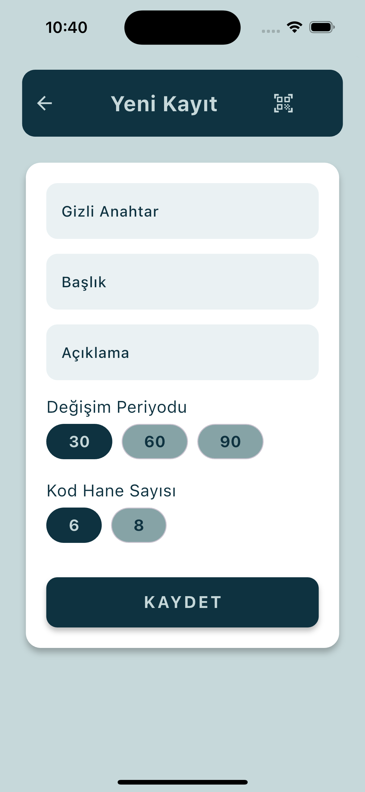
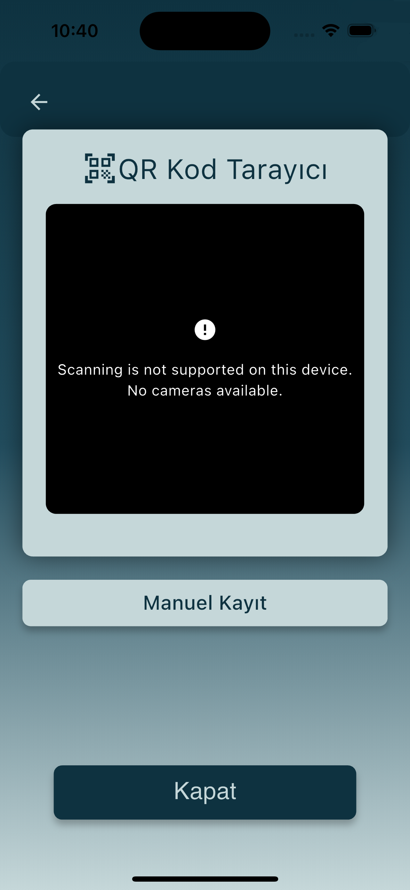
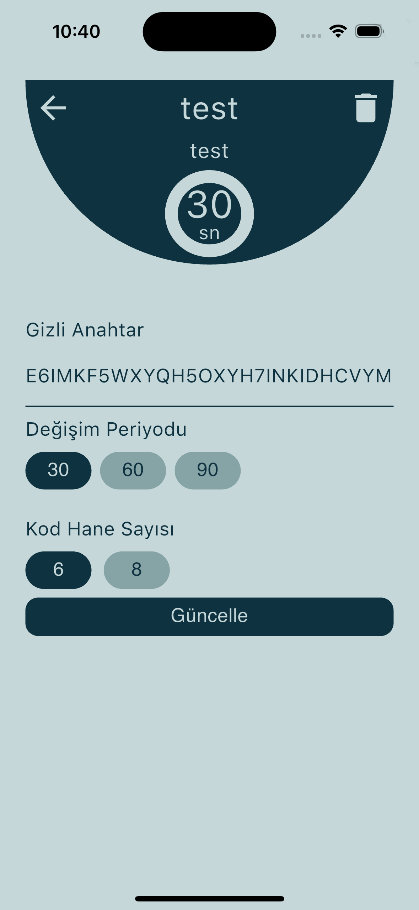

Uygulama Nasıl Kullanılır
Öncelikle, uygulamayı çalıştırın.
Ardından QR Kod ile veya manuel olarak Zaman Bazlı OTP girişi ekleyin.
TOTP Gizli kodları geçerli Base32 formatında olmalıdır.
Başlık 10 karakterden uzun olamaz ve açıklama en fazla 15 karakter uzunluğunda olabilir.
Sonra OTP kodu oluşturma için zaman aralığını seçin. 30, 60 veya 90 saniye kullanabilirsiniz.
Son olarak OTP kodu basamak sayısını seçin. 6 veya 8 basamak seçilebilir.
OTP kodlarınız ana ekranda listelenecek ve otomatik olarak güncellenecektir.
Uygulama Resimleri
     
Gizlilik Politikası
Güvenli TOTP uygulaması (bundan böyle “Uygulama” olarak anılacaktır), tamamen çevrimdışı (offline) çalışan ve kullanıcı verilerini toplamayan bir mobil uygulamadır. Bu politika, Uygulama ile ilgili gizlilik uygulamalarını açıklar.
1. Veri Toplama
Uygulama hiçbir şekilde:
- Kişisel verilerinizi toplamaz,
- İnternet bağlantısı gerektirmez,
- Üçüncü taraf hizmetlerle iletişim kurmaz,
- Cihazınızın konumunu veya diğer sistem bilgilerini almaz.
Uygulama, tamamen cihazınız üzerinde çalışır ve kullanıcı verilerini cihaz dışına göndermez.
2. Veri Paylaşımı
Uygulama, hiçbir kullanıcı verisini üçüncü şahıslarla paylaşmaz çünkü herhangi bir kullanıcı verisi toplanmamaktadır.
3. Çocukların Gizliliği
Uygulama, 13 yaşın altındaki çocuklardan kişisel bilgi toplamayı hedeflemez. Çünkü Uygulama, yaşa özel herhangi bir içerik sunmadığı gibi, kimlik tanımlayıcı veri de toplamaz.
4. Güvenlik
Uygulama, çevrimdışı çalıştığı ve hiçbir veri işlemediği için kullanıcı verilerinin korunması için özel bir güvenlik mekanizması gerekmez. Ancak cihazınızın güvenliği, genel kullanıcı deneyimini etkileyebilir.
5. Değişiklikler
Bu gizlilik politikası, ileride güncellenebilir. Güncellemeler bu sayfada yayınlanacaktır.
Son güncelleme: 21 Ağustos 2025
İletişim
Bize ulaşmak için aşağıdaki butona tıklayarak mail programınızı açabilirsiniz:
totpcontact@gmail.com
E-posta Gönder